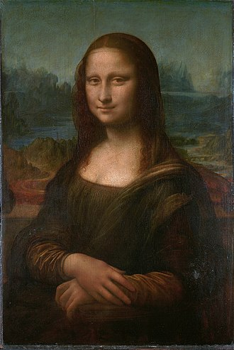
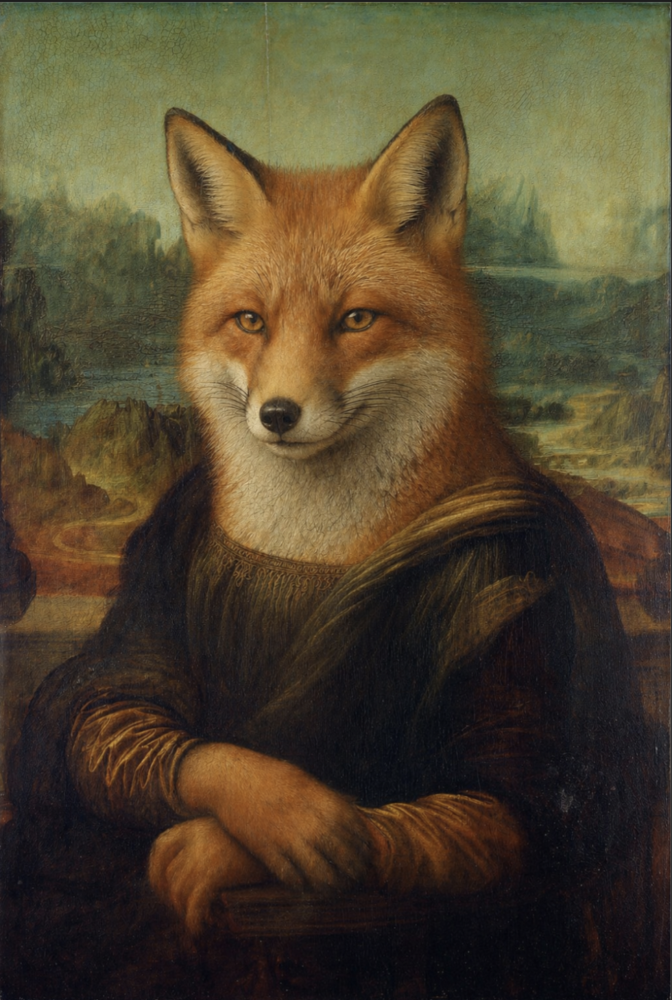

La Joconde est un portrait peint par Léonard de Vinci au début du XVIe siècle. Ce tableau est célèbre pour son sourire discret et son regards envoutant. Il est pssible de le voir aujourd'hui au musée du Louvre, à Paris.

Mona Renardina est le tableau Mona lisa renardisé. la fameuse joconde devient Mona renardina. On retrouve tout de meme le sourire discret et le regards envoutant.